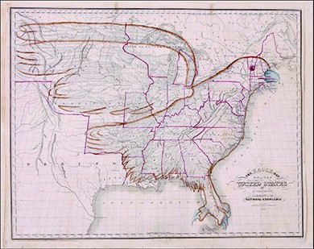
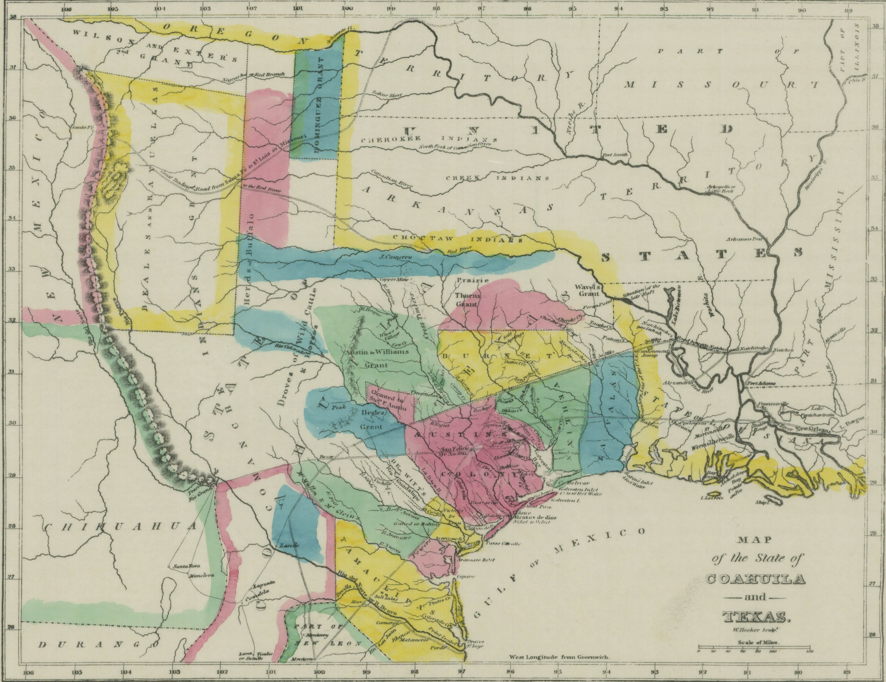
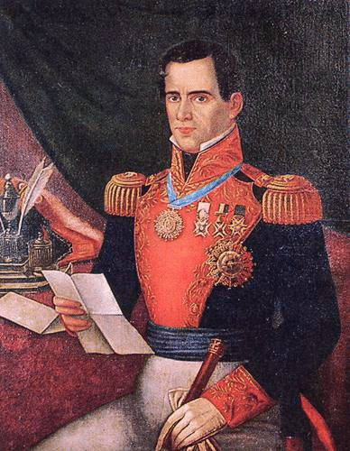
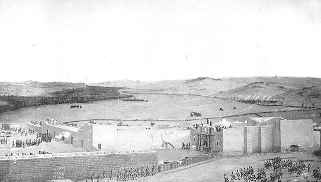

M1 History Constitution
Texas History and Constitutions
Six Flags Over Texas
Chapter Learning Objective
By the end of this chapter, you will be able to:
- Summarize the social history of Texas and how it has shaped the political characteristics of the state’s population
Introduction: Six Flags Over Texas
Texas has a rich and diverse history. Understanding that history helps explain why contemporary Texas is the way it is. This chapter explores a tiny piece of that history.
Figure 1.1 “Six Flags Over Texas” is the slogan used to describe the six nations that have had sovereignty over some or all of the current territory of the U.S. state of Texas: Spain (1519–1685; 1690–1821), France (1685–1690), Mexico (1821–1836), the Republic of Texas (1836–1845), the Confederate States of America (1861–1865), and the United States of America (1845–1861; 1865–present).
Independence for Texas
Learning Objective
By the end of this section, you will be able to:
- Describe the political culture of Texas and how it has developed over time
Introduction
American expansionists had desired the area of Spain’s empire we now call Texas for many years. After the 1819 Adams-Onís treaty established the boundary between Mexico and the United States, more American expansionists began to move into the northern portion of Mexico’s province of Coahuila y Texas. Following Mexico’s independence from Spain in 1821, American settlers immigrated to Texas in even larger numbers, intent on taking the land from the new and vulnerable Mexican nation in order to create a new American slave state.
American Settlers Move to Texas
After the 1819 Adams-Onís Treaty defined the U.S.-Mexico boundary, Spain began actively encouraging Americans to settle their northern province. Texas was sparsely settled, and the few Mexican farmers and ranchers who lived there were under constant threat of attack by hostile Indian tribes, especially the Comanche, who supplemented their hunting with raids in pursuit of horses and cattle.
To increase the non-Indian population in Texas and provide a buffer zone between its hostile tribes and the rest of Mexico, Spain began to recruit empresarios. An empresario was someone who brought settlers to the region in exchange for generous grants of land. Moses Austin, a once-prosperous entrepreneur reduced to poverty by the Panic of 1819, requested permission to settle three hundred English-speaking American residents in Texas. Spain agreed on the condition that the resettled people convert to Roman Catholicism.

Figure 1.2 By the early 1830s, all the lands east of the Mississippi River had been settled and admitted to the Union as states. The land west of the river, though in this contemporary map united with the settled areas in the body of an eagle symbolizing the territorial ambitions of the United States, remained largely unsettled by white Americans. Texas (just southwest of the bird’s tail feathers) remained outside the U.S. border. Image Credit: Moore, I. W., Carey & Hart & Churchman, J. (1833) The eagle map of the United States. [Philadelphia: E.L. Carey & A. Hart, 1833] [Map] Retrieved from the Library of Congress
On his deathbed in 1821, Austin asked his son Stephen to carry out his plans, and Mexico, which had won independence from Spain the same year, allowed Stephen to take control of his father’s grant. Like Spain, Mexico also wished to encourage settlement in the state of Coahuila y Texas and passed colonization laws to encourage immigration.
Thousands of Americans, primarily from slave states, flocked to Texas and quickly came to outnumber the Tejanos, the Mexican residents of the region. The soil and climate offered good opportunities to expand slavery and the cotton kingdom. Land was plentiful and offered at generous terms. Unlike the U.S. government, Mexico allowed buyers to pay for their land in installments and did not require a minimum purchase.
Furthermore, to many whites, it seemed not only their God-given right but also their patriotic duty to populate the lands beyond the Mississippi River, bringing with them American slavery, culture, laws, and political traditions.
The Texas War for Independence
Many Americans who migrated to Texas at the invitation of the Mexican government did not completely shed their identity or loyalty to the United States. They brought American traditions and expectations with them (including, for many, the right to own slaves). For instance, the majority of these new settlers were Protestant, and though they were not required to attend the Catholic mass, Mexico’s prohibition on the public practice of other religions upset them and they routinely ignored it.
Accustomed to representative democracy, jury trials, and the defendant’s right to appear before a judge, the Anglo-American settlers in Texas also disliked the Mexican legal system, which provided for an initial hearing by an alcalde, an administrator who often combined the duties of mayor, judge, and law enforcement officer. The alcalde sent a written record of the proceeding to a judge in Saltillo, the state capital, who decided the outcome. Settlers also resented that at most two Texas representatives were allowed in the state legislature.
Their greatest source of discontent, though, was the Mexican government’s 1829 abolition of slavery. Most American settlers were from southern states, and many had brought slaves with them. Mexico tried to accommodate them by maintaining the fiction that the slaves were indentured servants. But American slaveholders in Texas distrusted the Mexican government and wanted Texas to be a new U.S. slave state. The dislike of most for Roman Catholicism (the prevailing religion of Mexico) and a widely held belief in American racial superiority led them generally to regard Mexicans as dishonest, ignorant, and backward.

Figure 1.3 This 1833 map shows the extent of land grants made by Mexico to American settlers in Texas. Nearly all are in the eastern portion of the state, one factor that led to war with Mexico in 1846. Image credit: Holley (Armstrong & Plaskitt), Public Domain
Belief in their own superiority inspired some Texans to try to undermine the power of the Mexican government. When empresario Haden Edwards attempted to evict people who had settled his land grant before he gained title to it, the Mexican government nullified its agreement with him. Outraged, Edwards and a small party of men took prisoner the alcalde of Nacogdoches. The Mexican army marched to the town, and Edwards and his troops then declared the formation of the Republic of Fredonia between the Sabine and Rio Grande Rivers. To demonstrate loyalty to their adopted country, a force led by Stephen Austin hastened to Nacogdoches to support the Mexican army. Edwards’s revolt collapsed, and the revolutionaries fled Texas.
The growing presence of American settlers in Texas, their reluctance to abide by Mexican law, and their desire for independence caused the Mexican government to grow wary. In 1830, it forbade future U.S. immigration and increased its military presence in Texas. Settlers continued to stream illegally across the long border; by 1835, after immigration resumed, there were twenty thousand Anglo-Americans in Texas.
Fifty-five delegates from the Anglo-American settlements gathered in 1831 to demand the suspension of customs duties, the resumption of immigration from the United States, better protection from Indian tribes, the granting of promised land titles, and the creation of an independent state of Texas separate from Coahuila. Ordered to disband, the delegates reconvened in early April 1833 to write a constitution for an independent Texas. Surprisingly, General Antonio Lopez de Santa Anna, Mexico’s new president, agreed to all demands, except the call for statehood. Coahuila y Texas made provisions for jury trials, increased Texas’s representation in the state legislature, and removed restrictions on commerce.

Figure 1.4 This portrait of General Antonio Lopez de Santa Anna depicts the Mexican president and general in full military regalia. Image credit: Public Domain
Texans’ hopes for independence were quashed in 1834, however, when Santa Anna dismissed the Mexican Congress and abolished all state governments, including that of Coahuila y Texas. In January 1835, reneging on earlier promises, he dispatched troops to the town of Anahuac to collect customs duties. Lawyer and soldier William B. Travis and a small force marched on Anahuac in June, and the fort surrendered. On October 2, Anglo-American forces met Mexican troops at the town of Gonzales; the Mexican troops fled and the Americans moved on to take San Antonio. Now more cautious, delegates to the Consultation of 1835 at San Felipe de Austin voted against declaring independence, instead drafting a statement, which became known as the Declaration of Causes, promising continued loyalty if Mexico returned to a constitutional form of government. They selected Henry Smith, leader of the Independence Party, as governor of Texas and placed Sam Houston, a former soldier who had been a congressman and governor of Tennessee, in charge of its small military force.
The Consultation delegates met again in March 1836. They declared their independence from Mexico and drafted a constitution calling for an American-style judicial system and an elected president and legislature. Significantly, they also established that slavery would not be prohibited in Texas. Many wealthy Tejanos supported the push for independence, hoping for liberal governmental reforms and economic benefits.
Remember the Alamo!
Mexico had no intention of losing its northern province. Santa Anna and his army of four thousand had besieged San Antonio in February 1836. Hopelessly outnumbered, its two hundred defenders, under Travis, fought fiercely from their refuge in an old mission known as the Alamo. After ten days, however, the mission was taken and all but a few of the defenders were dead, including Travis and James Bowie, the famed frontiersman who was also a land speculator and slave trader. A few male survivors, possibly including the frontier legend and former Tennessee congressman Davy Crockett, were led outside the walls and executed. The few women and children inside the mission were allowed to leave with the only adult male survivor, a slave owned by Travis who was then freed by the Mexican Army. Terrified, they fled.

Figure 1.5 The Fall of the Alamo, painted by Theodore Gentilz fewer than ten years after this pivotal moment in the Texas Revolution, depicts the 1836 assault on the Alamo complex. Image credit: Theodore Gentilz, Public Domain
Although hungry for revenge, the Texas forces under Sam Houston nevertheless withdrew across Texas, gathering recruits as they went. Coming upon Santa Anna’s encampment on the banks of San Jacinto River on April 21, 1836, they waited as the Mexican troops settled for an afternoon nap. Assured by Houston that “Victory is certain!” and told to “Trust in God and fear not!” the seven hundred men descended on a sleeping force nearly twice their number with cries of “Remember the Alamo!” Within fifteen minutes the Battle of San Jacinto was over.
Approximately half the Mexican troops were killed, and the survivors, including Santa Anna, taken prisoner.
Santa Anna grudgingly signed a peace treaty and was sent to Washington, where he met with President Andrew Jackson and, under pressure, agreed to recognize an independent Texas with the Rio Grande River as its southwestern border. By the time the agreement had been signed, however, Santa Anna had been removed from power in Mexico.
For that reason, the Mexican Congress refused to be bound by Santa Anna’s promises and continued to insist that the renegade territory still belonged to Mexico. Visit the official Alamo website to learn more about the battle of the Alamo and take a virtual tour of the old mission.
The Lone Star Republic
In September 1836, military hero Sam Houston was elected president of Texas, and, following the relentless logic of U.S. expansion, Texans voted in favor of annexation to the United States. This had been the dream of many settlers in Texas all along. They wanted to expand the United States west and saw Texas as the next logical step. Slaveholders there, such as Sam Houston, William B. Travis and James Bowie (the latter two of whom died at the Alamo), believed too in the destiny of slavery.
Mindful of the vicious debates over Missouri that had led to talk of disunion and war, American politicians were reluctant to annex Texas or, indeed, even to recognize it as a sovereign nation. Annexation would almost certainly mean war with Mexico, and the admission of a state with a large slave population, though permissible under the Missouri Compromise, would bring the issue of slavery once again to the fore.
Texas had no choice but to organize itself as the independent Lone Star Republic. To protect itself from Mexican attempts to reclaim it, Texas sought and received recognition from France, Great Britain, Belgium, and the Netherlands. The United States did not officially recognize Texas as an independent nation until March 1837, nearly a year after the final victory over the Mexican army at San Jacinto.
Uncertainty about its future did not discourage Americans committed to expansion, especially slaveholders, from rushing to settle in the Lone Star Republic, however. Between 1836 and 1846, its population nearly tripled. By 1840, nearly twelve thousand enslaved Africans had been brought to Texas by American slaveholders. Many new settlers had suffered financial losses in the severe financial depression of 1837 and hoped for a new start in the new nation. According to folklore, across the United States, homes and farms were deserted overnight, and curious neighbors found notes reading only “GTT” (“Gone to Texas”). Many Europeans, especially Germans, also immigrated to Texas during this period.
In keeping with the program of ethnic cleansing and white racial domination, as illustrated by the image at the beginning of this chapter, Americans in Texas generally treated both Tejano and Indian residents with utter contempt, eager to displace and dispossess them. Anglo- American leaders failed to return the support their Tejano neighbors had extended during the rebellion and repaid them by seizing their lands. In 1839, the republic’s militia attempted to drive out the Cherokee and Comanche.
The impulse to expand did not lay dormant, and Anglo-American settlers and leaders in the newly formed Texas republic soon cast their gaze on the Mexican province of New Mexico as well. Repeating the tactics of earlier filibusters, a Texas force set out in 1841 intent on taking Santa Fe. Its members encountered an army of New Mexicans and were taken prisoner and sent to Mexico City. On Christmas Day, 1842, Texans avenged a Mexican assault on San Antonio by attacking the Mexican town of Mier. In August, another Texas army was sent to attack Santa Fe, but Mexican troops forced them to retreat. Clearly, hostilities between Texas and Mexico had not ended simply because Texas had declared its independence.
Licenses and Attributions
CC LICENSED CONTENT, ORIGINAL
Revision and Adaptation. Authored by: Daniel M. Regalado. License: CC BY: Attribution
CC LICENSED CONTENT, SHARED PREVIOUSLY
U.S. History. Authored by: OpenStax. Provided by: OpenStax; Rice University. Located at: http://cnx.org/contents/a7ba2fb8-8925-4987- b182-5f4429d48daa@6.16
License: CC BY: Attribution. License Terms: Download for free at http://cnx.org/contents/a7ba2fb8-8925-4987-b182-5f4429d48daa@6.16.
The Mexican-American War, 1846–1848
Learning Objective
By the end of this section, you will be able to:
- Describe the influence the Mexican-American War had on Texas
Introduction
Tensions between the United States and Mexico rapidly deteriorated in the 1840s as American expansionists eagerly eyed Mexican land to the west, including the lush northern Mexican province of California. Indeed, in 1842, a U.S. naval fleet, incorrectly believing war had broken out, seized Monterey, California, a part of Mexico. Monterey was returned the next day, but the episode only added to the uneasiness with which Mexico viewed its northern neighbor. The forces of expansion, however, could not be contained, and American voters elected James Polk in 1844 because he promised to deliver more lands. President Polk fulfilled his promise by gaining Oregon and, most spectacularly, provoking a war with Mexico that ultimately fulfilled the wildest fantasies of expansionists. By 1848, the United States encompassed much of North America, a republic that stretched from the Atlantic to the Pacific.
James K. Polk And The Triumph Of Expansion
A fervent belief in expansion gripped the United States in the 1840s. In 1845, a New York newspaper editor, John O’Sullivan, introduced the concept of “manifest destiny” to describe the popular idea of the special role of the United States in overspreading the continent—the divine right and duty of white Americans to seize and settle the American West, thus spreading Protestant, democratic values. In this climate of opinion, voters in 1844 elected James K. Polk, a slaveholder from Tennessee, because he vowed to annex Texas as a new slave state and take Oregon.
Annexing Oregon was an important objective for U.S. foreign policy because it appeared to be an area rich in commercial possibilities.
Northerners favored U.S. control of Oregon because ports in the Pacific Northwest would be gateways for trade with Asia. Southerners hoped that, in exchange for their support of expansion into the northwest, northerners would not oppose plans for expansion into the southwest.

Figure 1.6 This map shows Oregon Country and the border dispute between the U.S. and Britain, 1818-1846. Image Credit: Kmusser, CC-BY-SA-2.5
President Polk—whose campaign slogan in 1844 had been “Fifty-four forty or fight!”—asserted the United States’ right to gain full control of what was known as Oregon Country, from its southern border at 42° latitude (the current boundary with California) to its northern border at 54° 40′ latitude. According to an 1818 agreement, Great Britain and the United States held joint ownership of this territory, but the 1827 Treaty of Joint Occupation opened the land to settlement by both countries.
Realizing that the British were not willing to cede all claims to the territory, Polk proposed the land be divided at 49° latitude (the current border between Washington and Canada). The British, however, denied U.S. claims to land north of the Columbia River (Oregon’s current northern border). Indeed, the British foreign secretary refused even to relay Polk’s proposal to London. However, reports of the difficulty Great Britain would face defending Oregon in the event of a U.S. attack, combined with concerns over affairs at home and elsewhere in its empire, quickly changed the minds of the British, and in June 1846, Queen Victoria’s government agreed to a division at the forty-ninth parallel.
In contrast to the diplomatic solution with Great Britain over Oregon, when it came to Mexico, Polk and the American people proved willing to use force to wrest more land for the United States. In keeping with voters’ expectations, President Polk set his sights on the Mexican state of California. After the mistaken capture of Monterey, negotiations about purchasing the port of San Francisco from Mexico broke off until September 1845. Then, following a revolt in California that left it divided in two, Polk attempted to purchase Upper California and New Mexico as well. These efforts went nowhere. The Mexican government, angered by U.S. actions, refused to recognize the independence of Texas.
Finally, after nearly a decade of public clamoring for the annexation of Texas, in December 1845 Polk officially agreed to the annexation of the former Mexican state, making the Lone Star Republic an additional slave state. Incensed that the United States had annexed Texas, however, the Mexican government refused to discuss the matter of selling land to the United States. Indeed, Mexico refused even to acknowledge Polk’s emissary, John Slidell, who had been sent to Mexico City to negotiate. Not to be deterred, Polk encouraged Thomas O. Larkin, the U.S. consul in Monterey, to assist any American settlers and any Californios, the Mexican residents of the state, who wished to proclaim their independence from Mexico. By the end of 1845, having broken diplomatic ties with the United States over Texas and having grown alarmed by American actions in California, the Mexican government warily anticipated the next move. It did not have long to wait.
War With Mexico, 1846–1848

Figure 1.7 In 1845, when Texas joined the United States, Mexico insisted the United States had a right only to the territory northeast of the Nueces River. The United States argued in turn that it should have title to all land between the Nueces and the Rio Grande as well.
Expansionistic fervor propelled the United States to war against Mexico in 1846. The United States had long argued that the Rio Grande was the border between Mexico and the United States, and at the end of the Texas war for independence Santa Anna had been pressured to agree.
Mexico, however, refused to be bound by Santa Anna’s promises and insisted the border lay farther north, at the Nueces River. To set it at the Rio Grande would, in effect, allow the United States to control land it had never occupied. In Mexico’s eyes, therefore, President Polk violated its sovereign territory when he ordered U.S. troops into the disputed lands in 1846. From the Mexican perspective, it appeared the United States had invaded their nation.
In January 1846, the U.S. force that was ordered to the banks of the Rio Grande to build a fort on the “American” side encountered a Mexican cavalry unit on patrol. Shots rang out, and sixteen U.S. soldiers were killed or wounded. Angrily declaring that Mexico “has invaded our territory and shed American blood upon American soil,” President Polk demanded the United States declare war on Mexico. On May 12, Congress obliged.
The small but vocal antislavery faction decried the decision to go to war, arguing that Polk had deliberately provoked hostilities so the United States could annex more slave territory. Illinois representative Abraham Lincoln and other members of Congress issued the “Spot Resolutions” in which they demanded to know the precise spot on U.S. soil where American blood had been spilled. Many Whigs also denounced the war. Democrats, however, supported Polk’s decision, and volunteers for the army came forward in droves from every part of the country except New England, the seat of abolitionist activity. Enthusiasm for the war was aided by the widely held belief that Mexico was a weak, impoverished country and that the Mexican people, perceived as ignorant, lazy, and controlled by a corrupt Roman Catholic clergy, would be easy to defeat.

Figure 1.8 Anti-Catholic sentiment played an important role in the Mexican-American War. The American public widely regarded Roman Catholics as cowardly and vice- ridden, like the clergy in this ca. 1846 lithograph who are shown fleeing the Mexican town of Matamoros accompanied by pretty women and baskets full of alcohol. Image Credit: Library of Congress
U.S. military strategy had three main objectives: 1) Take control of northern Mexico, including New Mexico; 2) seize California; and 3) capture Mexico City. General Zachary Taylor and his Army of the Center were assigned to accomplish the first goal, and with superior weapons they soon captured the Mexican city of Monterrey. Taylor quickly became a hero in the eyes of the American people, and Polk appointed him commander of all U.S. forces.
General Stephen Watts Kearny, commander of the Army of the West, accepted the surrender of Santa Fe, New Mexico, and moved on to take control of California, leaving Colonel Sterling Price in command. Despite Kearny’s assurances that New Mexicans need not fear for their lives or their property, and in fact the region’s residents rose in revolt in January 1847 in an effort to drive the Americans away. Although Price managed to put an end to the rebellion, tensions remained high. Kearny, meanwhile, arrived in California to find it already in American hands through the joint efforts of California settlers, U.S. naval commander John D. Sloat, and John C. Fremont, a former army captain and son-in-law of Missouri senator Thomas Benton. Sloat, at anchor off the coast of Mazatlan, learned that war had begun and quickly set sail for California. He seized the town of Monterey in July 1846, less than a month after a group of American settlers led by William B. Ide had taken control of Sonoma and declared California a republic. A week after the fall of Monterey, the navy took San Francisco with no resistance. Although some Californios staged a short-lived rebellion in September 1846, many others submitted to the U.S. takeover. Thus Kearny had little to do other than take command of California as its governor.
Leading the Army of the South was General Winfield Scott. Both Taylor and Scott were potential competitors for the presidency, and believing—correctly—that whoever seized Mexico City would become a hero, Polk assigned Scott the campaign to avoid elevating the more popular Taylor, who was affectionately known as “Old Rough and Ready.”
Scott captured Veracruz in March 1847, and moving in a northwesterly direction from there (much as Spanish conquistador Hernán Cortés had done in 1519), he slowly closed in on the capital. Every step of the way was a hard-fought victory, however, and Mexican soldiers and civilians both fought bravely to save their land from the American invaders.
Mexico City’s defenders, including young military cadets, fought to the end. According to legend, cadet Juan Escutia’s last act was to save the Mexican flag, and he leapt from the city’s walls with it wrapped around his body. On September 14, 1847, Scott entered Mexico City’s central plaza; the city had fallen. While Polk and other expansionists called for “all Mexico,” the Mexican government and the United States negotiated for peace in 1848, resulting in the Treaty of Guadalupe Hidalgo.

Figure 1.9 In General Scott’s Entrance into Mexico, Carl Nebel depicts General Winfield Scott on a white horse entering Mexico City’s Plaza de la Constitución as anxious residents of the city watch. One woman peers furtively from behind the curtain of an upstairs window. On the left, a man bends down to pick up a paving stone to throw at the invaders. The American flag is flying over the National Palace, the seat of the Mexican government. Image Credit: Adolphe Jean- Baptiste Bayot - Published in the 1851 book “The War Between the United States and Mexico, Illustrated.” Public Domain
The Treaty of Guadalupe Hidalgo, signed in February 1848, was a triumph for American expansionism under which Mexico ceded nearly half its land to the United States. The Mexican Cession, as the conquest of land west of the Rio Grande was called, included the current states of California, New Mexico, Arizona, Nevada, Utah, and portions of Colorado and Wyoming. Mexico also recognized the Rio Grande as the border with the United States. Mexican citizens in the ceded territory were promised U.S. citizenship in the future when the territories they were living in became states. In exchange, the United States agreed to assume $3.35 million worth of Mexican debts owed to U.S. citizens, paid Mexico $15 million for the loss of its land, and promised to guard the residents of the Mexican Cession from Indian raids.
Explore the U.S.-Mexican War at PBS to read about life in the Mexican and U.S. armies during the war and to learn more about the various battles.
As extensive as the Mexican Cession was, some argued the United States should not be satisfied until it had taken all of Mexico. Many who were opposed to this idea were southerners who, while desiring the annexation of more slave territory, did not want to make Mexico’s large mestizo (people of mixed Indian and European ancestry) population part of the United States. Others did not want to absorb a large group of Roman Catholics. These expansionists could not accept the idea of new U.S. territory filled with mixed-race, Catholic populations.
Licenses And Attributions
CC LICENSED CONTENT, ORIGINAL
Revision and Adaptation. Authored by: Daniel M. Regalado. License: CC BY: Attribution
CC LICENSED CONTENT, SHARED PREVIOUSLY
U.S. History. Authored by: OpenStax. Provided by: OpenStax; Rice University. Located at: http://cnx.org/contents/a7ba2fb8-8925-4987- b182-5f4429d48daa@6.16. License: CC BY: Attribution License Terms: Download for free at http://cnx.org/contents/a7ba2fb8-8925-4987-b182-5f4429d48daa@6.16.
Texas in the American Civil War
Learning Objective
By the end of this section, you will be able to:
- Summarize the American Civil War’s influence on Texas
Introduction
The U.S. state of Texas declared its secession from the United States of America on February 1, 1861, and joined the Confederate States on March 2, 1861, after it replaced its governor, Sam Houston, when he refused to take an oath of allegiance to the Confederacy. As with those of other States, the Declaration was not recognized by the United States government at Washington. Some Texan military units fought in the Civil War east of the Mississippi River, but Texas was most useful for supplying soldiers and horses for Confederate forces. Texas’ supply role lasted until mid-1863, after which time Union gunboats controlled the Mississippi River, making large transfers of men, horses or cattle impossible. Some cotton was sold in Mexico, but most of the crop became useless because of the Union naval blockade of Galveston, Houston, and other ports.
Secession
In the late winter of 1860, Texan counties sent delegates to a special convention to debate the merits of secession. The convention adopted an “Ordinance of Secession” by a vote of 166 to 8, which was ratified by a popular referendum on February 23.
Separately from the Ordinance of Secession, which was considered a legal document, Texas also issued a declaration of causes spelling out the rationale for declaring secession. The document specifies several reasons for secession, including its solidarity with its “sister slave-holding States,” the U.S. government’s inability to prevent Indian attacks, slave-stealing raids, and other border-crossing acts of banditry. It accuses northern politicians and abolitionists of committing a variety of outrages upon Texans. The bulk of the document offers justifications for slavery saying that remaining a part of the United States would jeopardize the security of the two. The declaration includes this extract praising slavery, in which the Union itself is referred to as the “confederacy”:
“We hold as undeniable truths that the governments of the various States, and of the confederacy itself, were established exclusively by the white race, for themselves and their posterity; that the African race had no agency in their establishment; that they were rightfully held and regarded as an inferior and dependent race, and in that condition only could their existence in this country be rendered beneficial or tolerable.”
— Texas Secession Convention, A Declaration of the Causes which Impel the State of Texas to Secede from the Federal Union, (February 1861).
At this time, African Americans comprised 30 percent of the state’s population, and they were overwhelmingly enslaved. According to one Texan, keeping them enslaved was the primary goal of the state in joining the Confederacy:
“Independence without slavery, would be valueless… The South without slavery would not be worth a mess of pottage.” — Caleb Cutwell, letter to the Galveston Tri- Weekly, (February 22, 1865).
Secession Convention and the Confederacy
Following the election of Abraham Lincoln in 1860, public opinion in the cotton states of the Lower South (South Carolina through Texas) swung in favor of secession. By February 1861, the other six states of the sub-region had separately passed ordinances of secession. However, events in Texas were delayed, largely due to the resistance of Southern Unionist governor, Sam Houston.
Unlike the other “cotton states”‘ chief executives, who took the initiative in secessionist efforts, Houston refused to call the Texas Legislature into special session to consider the question, relenting only when it became apparent citizens were prepared to act without him.
In early December 1860, before South Carolina even seceded, a group of State officials published via newspaper a call for a statewide election of convention delegates on January 8, 1861. This election was highly irregular, even for the standards of the day. It often relied on voice vote at public meetings, although “viva voce” (voice) voting for popular elections had been used since at least March 1846, less than three months after statehood. Unionists were often discouraged from attending or chose not to participate. This resulted in lopsided representation of secessionists delegates.
The election call had stipulated for the delegates to assemble in convention on January 28. Houston called the Legislature into session, hoping that the elected body would declare the unauthorized convention illegal. On January 21, 1861, the Legislature met in Austin and was addressed by Houston. Calling Lincoln’s election “unfortunate,” he nonetheless emphasized, in a reference to the upcoming meeting of the secession convention, it was no justification for “rash action.” However, the Texas Legislature voted the delegates’ expense money and supplies and—over Houston’s veto—made a pledge to uphold the legality of the Convention’s actions. The only stipulation was that the people of Texas have the final say in referendum.
With gubernatorial forces routed, the Secession Convention convened on January 28 and, in the first order of business, voted to back the legislature 140–28 in that an ordinance of secession, if adopted, be submitted for statewide consideration. The following day, convention president Oran Roberts introduced a resolution suggesting Texas leave the Union. The ordinance was read on the floor the next day, citing the failures of the federal government to protect the lives and property of Texas citizens and accusing the Northern states of using the same as a weapon to “strike down the interests and prosperity” of the Southern people.
After the grievances were listed, the ordinance repealed the one of July 4, 1845, in which Texas approved annexation by the United States and the Constitution of the United States, and revoked all powers of, obligations to, and allegiance to, the U.S. federal government and the U.S. Constitution.
In the interests of historical significance and posterity, the ordinance was written to take effect on March 2, the date of Texas Declaration of Independence (and, coincidentally, Houston’s birthday).
On February 1, members of the Legislature, and a huge crowd of private citizens, packed the House galleries and balcony to watch the final vote on the question of secession. Seventy “yea” votes were recorded before there was a single “nay.” One of the negative votes is enshrined in Texas history books. James Webb Throckmorton, from Collin County in North Texas, in response to the roar of hisses and boos and catcalls which greeted his decision, retorted, “When the rabble hiss, well may patriots tremble.” Appreciating his style, the crowd afforded him a grudging round of applause (like many Texans who initially opposed secession, Throckmorton accepted the result and served his state, rising to the rank of brigadier-general in the Confederate army).
The final tally for secession was 166–7, a vote whose legality was upheld by the Texas Legislature on February 7. Other than in South Carolina, where the vote was unanimous, this was the highest percentage of any other state of the Lower South. On February 7, the Legislature ordered a referendum to be held on the ordinance under the direction of the convention. The decision was further affirmed on February 23 when a statewide referendum resulted in Texas voters approving the measure, 46,129 to 14,697.
The last order of business was to appoint a delegation to represent Texas in Montgomery, Alabama, where their counterparts from the other six seceding states were meeting to form a new Confederacy. On March 4, the convention assembled again to formally declare Texas out of the Union and to approve the “Constitution of the Confederate States of America”, which had been drawn up by its “Provisional Congress” (as it turned out, Texas had already been admitted into the fold on March 1).In March, George Williamson, the Louisianan state commissioner, addressed the Texan secession convention, where he called upon Texas and the slave states of the U.S. to declare secession from the Union in order to continue the institution of slavery:
“With the social balance wheel of slavery to regulate its machinery, we may fondly indulge the hope that our Southern government will be perpetual… Louisiana looks to the formation of a Southern confederacy to preserve the blessings of African slavery…”
— George Williamson, speech to the Texan secession convention, (March 1861).
Governor Sam Houston accepted secession but asserted that the Convention had no power to link the state with the new Southern Confederacy. Instead, he urged that Texas revert to its former status as an independent republic and stay neutral. Houston took his seat on March 16, the date state officials were scheduled to take an oath of allegiance to the Confederacy. He remained silent as his name was called out three times and, after failing to respond, the office of governor was declared vacant and Houston was deposed from office.
Seizure of Federal Property and Arms
After Texas passed its Ordinance of Secession, the state government appointed four men as “Commissioners of Public Safety” to negotiate with the federal government for the safe transfer of military installations and bases in Texas to the Confederates. Along with land baron Samuel A. Maverick and Thomas J. Devine, Dr. Philip N. Luckett met with U.S. Army General David E. Twiggs on February 8, 1861, to arrange the surrender of the federal property in San Antonio, including the military stores being housed in the old Alamo mission.
As a result of the negotiations, Twiggs delivered his entire command and its associated Army property (10,000 rifled muskets) to the Confederacy, an act that brought cries of treason from Unionists throughout the state. Almost immediately, Twiggs was dismissed from the U.S. Army by President Buchanan for “treachery to the flag of his country.” Shortly afterwards, he accepted a commission as general in the Confederate Army but was so upset by being branded a traitor that he wrote a letter to Buchanan stating the intention to call upon him for a “personal interview” (then a common euphemism to fight a duel). Future Confederate general Robert E. Lee, then still a colonel in the U.S. Army, was in San Antonio at the time and when he heard the news of the surrender to Texas authorities, responded, “Has it come so soon as this?”
Unionist Sentiment and Opposition to The Confederacy
Despite the prevailing view of the vast majority of the state’s politicians and the delegates to the Secession Convention, there were a significant number of Texans who opposed secession. The referendum on the issue indicated that some 25% favored remaining in the Union at the time the question was originally considered.
The largest concentration of anti-secession sentiment was among the German Texan population in the Texas Hill Country, and in some of the counties of North Texas. In the latter region, most of the residents were originally from states of the Upper South. Some of the leaders initially opposed to secession accepted the Confederate cause once the matter was decided, some withdrew from public life, others left the state, and a few even joined the Union army. Confederate conscription laws forced most men of military age into the Confederate army, regardless of their sentiment. However, at least 2000 Texans joined the Union rank.
In October 1862, approximately 150 settlers in and around Cooke County on the Red River were arrested by the 11th Texas Cavalry led by Colonel William C. Young on the orders of Colonel James Bourland, Confederate Provost Marshal for northern Texas. A court was convened in Gainesville to try them for allegedly plotting to seize the arsenals at Sherman and Gainesville and to kill their Confederate neighbors, seize their property, and to cooperate with Union army forces poised to invade northern Texas from Arkansas and/or Indian Territory. Several of the settlers were hanged in what is now downtown Gainesville during the first week of October.
Nineteen additional men were found guilty and hanged before the end of the month. A total of about forty Unionists were hanged in Gainesville, two were shot while trying to escape, and two more were hanged elsewhere after being turned over to a military tribunal. Under the primitive conditions on the Texas frontier during the Civil War, evidence against the accused was questionable, and the legal proceedings were highly imperfect. A granite monument in a small park marks the spot where the hangings took place.
The Confederacy’s conscription act proved controversial, not only in Texas but all across the South. Despite the referendum result, some opponents argued that the war was being fought by poor people on behalf of a few wealthy slave owners. The Act exempted from the draft men who owned fifteen or more slaves. Draft resistance was widespread especially among Texans of German or Mexican descent; many of the latter went to Mexico. Potential draftees went into hiding, Confederate officials hunted them down, and many were shot or captured and forced into the army.
Sam Houston
Sam Houston was the premier Southern Unionist in Texas. While he argued for slave property rights and deplored the election of the Lincoln Administration, he considered secession unconstitutional and thought secession at that moment in time was a “rash action” that was certain to lead to a conflict favoring the industrial and populated North. He predicted: “Let me tell you what is coming. After the sacrifice of countless millions of treasure and hundreds of thousands of lives, you may win Southern independence if God be not against you, but I doubt it. I tell you that, while I believe with you in the doctrine of states rights, the North is determined to preserve this Union. They are not a fiery, impulsive people as you are, for they live in colder climates. But when they begin to move in a given direction, they move with the steady momentum and perseverance of a mighty avalanche; and what I fear is, they will overwhelm the South.”
Houston rejected the actions of the Texas Secession Convention, believing it had overstepped its authority in becoming a member state of the newly formed Confederacy. He refused to take an oath of allegiance to the Confederacy and was deposed from office. In a speech he wrote, but did not deliver, he said:
Fellow-Citizens, in the name of your rights and liberties, which I believe have been trampled upon, I refuse to take this oath. In the name of the nationality of Texas, which has been betrayed by the Convention, I refuse to take this oath. In the name of the Constitution of Texas, I refuse to take this oath. In the name of my own conscience and manhood, which this Convention would degrade by dragging me before it, to pander to the malice of my enemies, I refuse to take this oath. I deny the power of this Convention to speak for Texas….I protest….against all the acts and doings of this convention and I declare them null and void.
After his ouster from the governor’s office, Houston maintained a low public profile until his death in July 1863. Before he died, Houston wrote a friend: “There comes a time a man’s section is his country…I stand with mine. I was a conservative citizen of the United States…I am now a conservative citizen of the Southern Confederacy.”
Military Recruitment
Over 70,000 Texans served in the Confederate army and Texas regiments fought in every major battle throughout the war. Some men were veterans of the Mexican–American War; a few had served in the earlier Texas Revolution. The state furnished the Confederacy with 45 regiments of cavalry, 23 regiments of infantry, 12 battalions of cavalry, 4 battalions of infantry, 5 regiments of heavy artillery, and 30 batteries of light artillery. The state maintained at its own expense some additional troops that were for home defense. These included 5 regiments and 4 battalions of cavalry, and 4 regiments and one battalion of infantry. In 1862 the Confederate Congress in Richmond, Virginia, passed a conscription law that ordered all men from 18 to 45 years of age to be placed into military service except ministers, state, city, county officers, and certain slave owners; all persons holding 20 slaves or more were exempt from Confederate conscription under the “Twenty Negro Law.”
When the first companies of Texas soldiers reached Richmond, Virginia, Confederate President Jefferson Davis greeted them with the words: “Texans! The troops of other states have their reputations to gain, but the sons of the defenders of the Alamo have theirs to maintain. I am assured that you will be faithful to the trust.”
“The Texas Brigade” (also known as “Hood’s Brigade”) was a unit composed of the 1st, 4th and 5th Texas infantry regiments augmented at times by the 18th Georgia Infantry and Hampton’s (South Carolina) Legion until they were permanently teamed with the 3rd Arkansas Infantry. Often serving as “shock troops” of General Robert E. Lee’s Army of Northern Virginia, the Texas Brigade was “always favorites” of General Lee and on more than one occasion Lee praised their fighting qualities, remarking that none had brought greater honor to their native state than “my Texans.” Hood’s men suffered severe casualties in a number of fights, most notably at the Battle of Antietam, where they faced off with Wisconsin’s Iron Brigade, and at Gettysburg, where they assaulted Houck’s Ridge and then Little Round Top.
“Walker’s Greyhound Division” was a division composed of four brigades with Texan units; the only division in the Confederate States Army that maintained its single-state composition throughout the War. Formed in 1862 under command of Major General John George Walker it fought in the Western Theater and the Trans-Mississippi Department, and was considered an elite backbone of the army. Detached from the division in 1863, the 4th brigade fought at the Battle of Arkansas Post, where it became isolated and was forced to surrender. A new fourth brigade was added the division in 1865.
Among the most famous mounted units were Terry’s Texas Rangers, a militia of former rangers and frontiersmen, many of whom later became peacekeepers in the Old West; and the 33rd Texas Cavalry Regiment of Colonel Santos Benavides, which guarded the Confederate cotton trade lines from Texas into northern Mexico.
Over 2,000 Texas men joined the Union Army. Notable among them was future Texas governor Edmund J. Davis who initially commanded the Union Army’s 1st Texas Cavalry and rose to the rank of brigadier general.
Texas’s relatively large German population around Austin County led by Paul Machemehl tried to remain neutral in the War but eventually left Confederate Texas for Mexico. East Texas gave the most support to secession, and the only East Texas counties in which significant numbers of people opposed secession were Angelina County, Fannin County, and Lamar County, although these counties supplied many men to Texas regiments, including the 9th Texas Infantry Regiment; the 1st Partisan Rangers; 3rd, 4th, 9th, 27th, and 29th Texas Cavalry; and the 9th Texas Field Battery.
In 1862, Abraham Lincoln named a former United States Congressman, Andrew J. Hamilton, as the Military Governor of Texas. Hamilton held the title throughout the War. During the early stages of Reconstruction Hamilton was named as the first provisional civilian governor. For a time thereafter, active-duty U.S. Army officers served as military governors of Texas.
Years into the war, one Confederate soldier from Texas gave his reasons for fighting for the Confederacy, stating that “we are fighting for our property”, whereas Union soldiers were fighting for the “flimsy and abstract idea that a negro is equal to an Anglo.”
Civil War Battles In Texas
Texas did not experience many significant battles. However, the Union mounted several attempts to capture the “Trans-Mississippi” regions of Texas and Louisiana from 1862 until the war’s end. With ports to the east captured or under blockade, Texas in particular became a blockade-running haven. Referred to as the “backdoor” of the Confederacy, Texas and western Louisiana continued to provide loads of harvested cotton that were transported overland to the Mexican border town of Matamoros, Tamaulipas and shipped to Europe in exchange for supplies. Determined to shut off this trade, the Union mounted several attacks, each of them unsuccessful.
Texas Occupation
The U.S. Navy blockaded the principal seaport, Galveston, for four years, and federal infantry occupied the city for three months in late 1862. Confederate troops under Gen. John B. Magruder recaptured the city on January 1, 1863 and it remained in Confederate hands until the end of the war. A few days later the Confederate raider CSS Alabama attacked and sank the USS Hatteras in a naval engagement off the coast of Galveston.
A few other cities also fell to Union troops at times during the war, including Port Lavaca, Indianola, and Brownsville. Federal attempts to seize control of Laredo, Corpus Christi, and Sabine Pass failed. By the end of the war no territory but Brazos Island and El Paso was in Union hands. The California Column occupied the region around El Paso from 1862 to the end of the war.
The most notable military battle in Texas during the war happened on September 8, 1863. At the Second Battle of Sabine Pass, a small garrison of 46 Confederates from the mostly-Irish Davis Guards under Lt. Richard W. Dowling, 1st Texas Heavy Artillery, defeated a much larger Union force from New Orleans under Gen. William B. Franklin. Skilled gunnery by Dowling’s troops disabled the lead ships in Franklin’s flotilla, prompting the remainder—4,000 men on 27 ships—to retreat back to New Orleans. This victory against such overwhelming odds resulted in the Confederate Congress passing a special resolution of recognition, and the only contemporary military decoration of the South, the Davis Guard Medal. CSA President Jefferson Davis stated, “Sabine Pass will stand, perhaps for all time, as the greatest military victory in the history of the world.”
In 1864, many Texas forces, including a division under Camille de Polignac, a French prince and Confederate general, moved into Northwestern Louisiana to stall Union Maj. Gen. Nathaniel Banks’ Red River Campaign, which was intended to advance into Texas from its eastern border. Confederate forces halted the expedition at the Battle of Mansfield, just east of the Texas border.
Union forces from Brazos Island launched the Brazos Santiago Expedition, leading to the last battle of the Civil War, the Battle of Palmito Ranch, fought in Texas on May 12, 1865, well after Robert E. Lee’s surrender on April 9, 1865, at Old Appomattox Court House, Virginia.
Collapse of Confederate Authority In Texas
In the spring of 1865, Texas contained over 60,000 soldiers of the Army of the Trans-Mississippi under General Edmund Kirby Smith. As garrison troops far removed from the main theaters of the war, morale had deteriorated to the point of frequent desertion and thievery. News of the surrender of Lee and other Confederate generals east of the Mississippi finally reached Texas around April.
Local Confederate authorities had mixed opinions on their future course of action. Most senior military leaders vowed to press on with the war, including commanding general Kirby Smith. Many soldiers, however, greeted frequent speeches whose theme was “fight on, boys” with derision, or simply failed to attend them.
The month of May brought increasing rates of desertion. News of Joseph E. Johnston’s and Richard Taylor’s surrenders confirmed that Texas, Louisiana, and Arkansas were now essentially alone to continue the Confederate cause. On May 14, troops in Galveston briefly mutinied, but were persuaded to remain under arms.
However, morale continued to sink. Generals John B. Magruder and Kirby Smith (who had already corresponded with Union Maj. Gen. John Pope regarding surrender terms on May 9) no longer sought to rally their demoralized troops, but rather began discussing the distribution of Confederate government property. Magruder pleaded that the rapid disbanding of the army would prevent depredations by disgruntled soldiers against the civilian population.
The haste to disband the army, combined with the pressing need to protect Confederate property from Union confiscation, created general mayhem. Soldiers began openly pillaging the Galveston quartermasters stores on May 21. Over the next few days, a mob demanded that a government warehouse be opened to them, and soldiers detained and plundered a train. Several hundred civilians sacked the blockade runner Lark when it docked on May 24, and troops sent to pacify the crowd soon joined in the plunder. On May 23, residents in Houston sacked the ordnance building and the clothing bureau. Riots continued in the city until May 26. Both government and private stores were raided extensively in Tyler, Marshall, Huntsville, Gonzales, Hempstead, La Grange, and Brownsville. In Navasota, a powder explosion cost eight lives and flattened twenty buildings. In Austin, the State Treasury was raided and $17,000 in gold was stolen. By May 27, half of the original confederate forces in Texas had deserted or been disbanded, and formal order had disappeared into lawlessness in many areas of Texas.
The formal remnants of Kirby Smith’s army had finally disintegrated by the end of May. Upon his arrival in Houston from Shreveport, the general called a court of inquiry to investigate the “causes and manner of the disbandment of the troops in the District of Texas, New Mexico and Arizona.” The May 30 findings laid the blame primarily on the civilian population. Kirby Smith addressed his few remaining soldiers and condemned those that had fled for not struggling to the last and leaving him “a commander without an army– a General without troops.” On June 2, he formally surrendered what was left of the Army of the “Trans-Mississippi.”
Restoration to The Union
Federal troops did not arrive in Texas to restore order until June 19, 1865, when Union Maj. Gen. Gordon Granger and 2,000 Union soldiers arrived on Galveston Island to take possession of the state and enforce the new freedoms of former slaves. The Texas holiday Juneteenth commemorates this date. The Stars and Stripes were not raised over Austin until June 25.
President Andrew Johnson appointed Union General Andrew J. Hamilton, a prominent politician before the war, as the provisional governor on June 17. He granted amnesty to ex-confederates if they promised to support the Union in the future, appointing some to office. On March 30, 1870, the United States Congress permitted Texas’ representatives to take their seat in Congress, although Texas did not meet all the formal requirements for readmission.
Notable Civil War Leaders from Texas
A number of notable leaders were associated with Texas during the Civil War. John Bell Hood gained fame as the commander of the Texas Brigade in the Army of Northern Virginia and played a prominent role as an army commander late in the war. “Sul” Ross was a significant leader in a number of “Trans-Mississippi” Confederate armies. Felix Huston Robertson was the only native Texan Confederate general. Capt. TJ Goree was one of Lt. General James Longstreet’s most trusted aides. John H. Reagan was an influential member of Jefferson Davis’s cabinet. Col. Santos Benavides was a Confederate colonel during the American Civil War. Benavides was the highest-ranking Tejano soldier to serve in the Confederate military.
The office of Governor of Texas was in flux throughout the war, with several men in power at various times. Sam Houston was governor when Texas seceded from the United States, but refused to declare any loyalty to the new Confederacy. He was replaced by Lieutenant Governor Edward Clark. Clark filled the rest of Houston’s term in 1861, and narrowly lost re-election by just 124 votes to Francis Lubbock. During his tenure, Lubbock supported Confederate conscription, working to draft all able-bodied men, including resident aliens, into the Confederate army. When Lubbock’s term ended in 1863, he joined the military. Ardent secessionist Pendleton Murrah replaced him in office. Even after Robert E. Lee surrendered in 1865, Murrah encouraged Texans to continue the revolution, and he and several supporters fled to Mexico.
Lingering Effects
The effects of the American Civil War linger even after 150 years have passed. It’s not uncommon to see the Confederate flag (especially the “Confederate Battle Flag”) and there are dozens of statues, monuments, and schools named after Confederate leaders. The controversy over these elements rages today.
References and Further Reading
“A Declaration of the Causes which Impel the State of Texas to Secede from the Federal Union”. Avalon Project. Yale Law School. 2008.
Cutwell, Caleb (February 22, 1865). “Letter to the Galveston Tri- Weekly”. Civil War Talk. Texas. Retrieved September 13, 2015.
An Act to direct the mode of voting in all popular elections, approved March 19, 1846. Gammel, H.P.N., ed. (1898). The Laws of Texas, 1822- 1897. 2. University of North Texas. p. 1318.
Buenger, Walter L. (March 8, 2011). “Secession Convention”. Handbook of Texas Online. Texas State Historical Association.
Buenger, Walter L. (March 8, 2011). “Secession Convention”. Handbook of Texas Online. Texas State Historical Association.
“An Ordinance: To dissolve the union between the State of Texas and the other States, united under the compact styled “The Constitution of the United States of America.” Adopted in Convention, at Austin City, the first day of February, A.D. 1861.” Narrative History of Texas Secession and Readmission to the Union. Austin. August 24, 2011.
“An Ordinance: To dissolve the union between the State of Texas and the other States, united under the compact styled “The Constitution of the United States of America.” Adopted in Convention, at Austin City, the first day of February, A.D. 1861.” Narrative History of Texas Secession and Readmission to the Union. Austin. August 24, 2011.
Minor, David (November 1, 2011). “Throckmorton, James Webb”. Handbook of Texas Online. Texas State Historical Association.
An Act to provide for submitting the Ordinance of Secession to a vote of the People, approved February 7, 1861. Gammel, H.P.N., ed. (1898). The Laws of Texas, 1822-1897. 5. University of North Texas. pp. 347–348.
Winkler, E.W. (1861). Journal of the Secession Convention of Texas. Texas. Retrieved September 8, 2015.
Roberts, O.M. (1899). Evans, Clement A., ed. Texas. Confederate Military History. XI. Atlanta, Georgia: Confederate Publishing Company. pp. 20–22.
“General Twiggs and Buchanan”. The New York Times. May 13, 1861.
Freeman, Douglas S. (1934). “R. E. Lee, A Biography”. Charles Scribner’s Sons. Retrieved May 20, 2008.
“Civil War”. Texas Military Forces Museum. Retrieved November 5, 2015.
Wooster, Ralph A. (March 4, 2011). “Civil War”. Handbook of Texas Online. Texas State Historical Association. McGowen, Stanley S. (July 2000). “Battle or Massacre? The Incident on the Nueces, August 10, 1862”. Southwestern Historical Quarterly. Texas State Historical Association. 104 (1): 64–86. JSTOR 30241669.
Campbell, Randolph B. (2003). Gone to Texas: A History of the Lone Star State. New York: Oxford University Press. p. 265. ISBN 978-0-1998- 8138-3.
“Lamar W. Henkins: German Freethinkers and the Massacre at the Nueces”. The Rag Blog. August 15, 2012.
Foner, Eric (March 1989). “The South’s Inner Civil War: The more fiercely the Confederacy fought for its independence, the more bitterly divided it became. To fully understand the vast changes the war unleashed on the country, you must first understand the plight of the Southerners who didn’t want secession”. American Heritage. Vol. 40 no.
American Heritage Publishing Company. p. 5. Archived from the original on January 3, 2015. Retrieved December 18, 2013.
McCaslin, Richard B. (June 15, 2010). “Great Hanging at Gainesville”. Handbook of Texas Online. Texas State Historical Association. Retrieved 22 November 2014.
Texas in the Civil War: A Capsule History Archived August 20, 2006, at the Wayback Machine.
Elliott, Claude (1947). “Union Sentiment in Texas 1861-1865”. Southwestern Historical Quarterly. Texas State Historical Association. 50 (4): 449–477. JSTOR 30237490.
Williams, Alfred Mason (1893). Sam Houston and the War of Independence in Texas. Houghton, Mifflin and Company. p. 354.
Haley, James l. (2004). Sam Houston. Norman: University of Oklahoma Press. pp. 390–391. ISBN 978-0-8061-5214-1.
Houston, General (June 2, 1861). “Gen. Houston’s Position”. The New York Times. Retrieved July 11, 2011.
Loewen, James W. (2007). Lies My Teacher Told Me: Everything Your American History Textbook Got Wrong. New York: The New Press. pp. 224–226. ISBN 978-1-56584-100-0. OCLC 29877812. Retrieved January 19, 2016.
McComb, David G. (1989). Texas, a modern history. Austin: University of Texas Press. p. 72. ISBN 0-292-74665-2.
McPherson, James M. (1997). For Cause and Comrades: Why Men Fought in the Civil War. New York City, New York: Oxford University Press, Inc. p. 117. ISBN 0-19-509-023-3. OCLC 34912692. Retrieved March 8, 2016.
Clampitt, Brad R. (April 2005). “The Breakup: The Collapse of the Confederate Trans-Mississippi Army in Texas, 1865”. Southwest Historical Quarterly. Texas State Historical Association. 108 (4). JSTOR 30240424.
“An Act to admit the State of Texas to Representation in the Congress of the United States”. Texas State Archives and Library Commission. Retrieved August 24, 2011.
McComb, David G. (1989). Texas, a modern history. Austin: University of Texas Press. p. 72. ISBN 0-292-74665-2.
McPherson, James M. (1997). For Cause and Comrades: Why Men Fought in the Civil War. New York City, New York: Oxford University Press, Inc. p. 117. ISBN 0-19-509-023-3. OCLC 34912692. Retrieved March 8, 2016.
Clampitt, Brad R. (April 2005). “The Breakup: The Collapse of the Confederate Trans-Mississippi Army in Texas, 1865”. Southwest Historical Quarterly. Texas State Historical Association. 108 (4). JSTOR 30240424.
“An Act to admit the State of Texas to Representation in the Congress of the United States”. Texas State Archives and Library Commission. Retrieved August 24, 2011.
Licenses And Attributions
CC LICENSED CONTENT, ORIGINAL
Revision and Adaptation. Authored by: Kris S. Seago. License: CC BY: Attribution
Reconstruction
Learning Objective
By the end of this section/chapter, you will be able to:
- Summarize the influence Reconstruction had on Texas
Introduction
The term Reconstruction has two applications: the first applies to the complete history of the entire country from 1865 to 1877 following the American Civil War; the second, to the attempted transformation of the 11 former Confederate states from 1863 to 1877, as directed by Congress, and the role of the Union states in that transformation. Reconstruction ended the remnants of Confederate secession and abolished slavery, making the newly freed slaves citizens with civil rights ostensibly guaranteed by three new constitutional amendments. As a former Confederate state, Texas underwent this transformation.
Juneteenth
Figure 1.10 Photograph of African-American band at Emancipation Day celebration, June 19, 1900, held in “East Woods” on East 24th Street in Austin. Mrs. Grace Murray Stephenson kept a diary of the day’s events, which she later sold to the San Francisco Chronicle, which wrote a full-page feature on it. Image Credit: Grace Murray Stephenson UNT Libraries
During the American Civil War, Texas had joined the Confederate States. The Confederacy was defeated, and U.S. Army soldiers arrived in Texas on June 19, 1865 to take possession of the state, restore order, and enforce the emancipation of slaves. The date is now commemorated as the holiday Juneteenth. On June 25, troops raised the American flag in Austin, the state capital.
Formerly enslaved people in Galveston rejoiced in the streets after the announcement, although in the years afterward many struggled to work through the changes against the resistance of whites. The following year, freedmenorganized the first of what became the annual celebration of Juneteenth in Texas.3 In some cities, African-Americans were barred from using public parks because of state-sponsored segregation of facilities. Across parts of Texas, freed people pooled their funds to purchase land to hold their celebrations, such as Houston’s Emancipation Park, Mexia’s Booker T. Washington Park, and Emancipation Park in Austin.
Reconstruction in Texas
U.S. President Andrew Johnson appointed Union General Andrew J. Hamilton, a prominent politician before the war, as the provisional governor on June 17. He granted amnesty to ex- Confederates if they promised to support the Union in the future, appointing some to office. Angry returning veterans seized state property and Texas went through a period of extensive violence and disorder. Most outrages took place in northern Texas and were committed by outlaws who had their headquarters in the Indian Territory and plundered and murdered without distinction of party.
On March 30, 1870, the United States Congress readmitted Texas into the Union, although Texas did not meet all the formal requirements for readmission. Like other Southern states, by the late 1870s white Democrats regained control, often with a mix of intimidation and terrorism by paramilitary groups operating for the Democratic Party. They passed a new constitution in 1876 that segregated schools and established a poll tax to support them, but it was not originally required for voting. In 1901 the Democratic- dominated legislature imposed a poll tax as a requirement for voting, and succeeded in disfranchising most blacks. The number of voters decreased from 100,000 in the 1890s to 5,000 by 1906.
References and Further Reading
Stephenson, Mrs. Charles (Grace Murray). Emancipation Day Celebration band, June 19, 1900, photograph, June 19, 1900; Accessed August 25, 2019.
University of North Texas Libraries, The Portal to Texas History, crediting Austin History Center, Austin Public Library.
Clampit, Brad R. (April 2005). The Breakup: The Collapse of the Confederate Trans-Mississippi Army in Texas, 1865. Southwest Historical Quarterly. CVIII. “Juneteenth”. Texas State Library and Archives Commission. Retrieved August 25, 2019.
Gates, Henry Louis, Jr. “What Is Juneteenth?” The African Americans: Many Rivers to Cross. PBS. Originally posted on The Root. Retrieved August 25, 2019.
Constitution of 1876. Handbook of Texas Online. Accessed August 25, 2019.
W. Marvin Dulaney, “AFRICAN AMERICANS,” Handbook of Texas Online, accessed February 22, 2014. Uploaded on June 9, 2010. Modified on June 20, 2013. Published by the Texas State Historical Association.
Licenses And Attributions
CC LICENSED CONTENT, ORIGINAL
Revision and Adaptation. Authored by: Kris S. Seago. License: CC BY: Attribution
Governor E.J. Davis
Learning Objective
By the end of this chapter, you will be able to:
- Summarize the role Governor E.J. Davis played in Texas history
Introduction
Edmund Jackson Davis (October 2, 1827 – February 24, 1883) was an American lawyer, soldier, and politician. He was a Southern Unionist and a general in the Union Army in the American Civil War. He also served for one term from 1870 to 1874 as the 14th Governor of Texas.
Civil War Years

Figure 1.11 Edmund Jackson Davis (October 2, 1827 – February 24, 1883) was an American lawyer, soldier, and politician. He was a Southern Unionist and a general in the Union Army in the American Civil War. He also served for one term from 1870 to 1874 as the 14th Governor of Texas. Image Credit: Jbarta, Public Domain
In early 1861, Edmund Davis supported Governor Sam Houston in their mutual stand against secession. Davis also urged Robert E. Lee not to violate his oath of allegiance to the United States. Davis ran to become a delegate to the Secession Convention but was defeated. He thereafter refused to take an oath of allegiance to theConfederate States of America and was removed from his judgeship. He fled from Texas and took refuge in Union-occupied New Orleans, Louisiana. He next sailed to Washington, D.C., where President Abraham Lincoln issued him a colonel’s commission with the authority to recruit the 1st Texas Cavalry Regiment (Union).
Davis recruited his regiment from Union men who had fled from Texas to Louisiana. The regiment would see considerable action during the remainder of the war. On November 10, 1864, President Lincoln appointed Davis as a brigadier general of volunteers.
Lincoln did not submit Davis’s nomination to this grade to the U.S. Senate until December 12, 1864. The U.S. Senate confirmed the appointment on February 14, 1865. Davis was among those present when General Edmund Kirby Smith surrendered the Confederate forces in Texas on June 2, 1865. Davis was mustered out of the volunteers on August 24, 1865.
Post War
Following the end of the war, Davis became a member of the 1866 Texas Constitutional Convention. He supported the rights of freed slaves and urged the division of Texas into several Republican- controlled states.
In 1869, he was narrowly elected governor against Andrew Jackson Hamilton, a Unionist Democrat. As a Radical Republican during Reconstruction, his term in office was controversial. On July 22, 1870, the Texas State Police came into being to combat crime statewide in Texas. It worked against racially based crimes, and included black police officers, which caused protest from former slaveowners (and future segregationists). Davis created the “State Guard of Texas” and the “Reserve Militia,” which were forerunners of the Texas National Guard.
Davis’ government was marked by a commitment to the civil rights of African Americans. One of his protégés was Norris Wright Cuney of Galveston, who continued the struggle for equality until his own death in 1896 and is honored as one of the important figures in Texas and American black history. Though Davis was highly unpopular among former Confederates, and most material written about him for many years was unfavorable, he was considered to have been a hero for the Union Army. He also gained the respect and friendship of Spanish-speaking residents on the Rio Grande frontier.
In 1873, Davis was defeated for reelection by Democrat Richard Coke (42,633 votes to 85,549 votes) in an election marked by irregularities. Davis contested the results and refused to leave his office on the ground floor of the Capitol. Democratic lawmakers and Governor-elect Coke reportedly had to climb ladders to the Capitol’s second story where the legislature convened. When President Grant refused to send troops to the defeated governor’s rescue, Davis reluctantly left the capital in January 1874. He locked the door to the governor’s office and took the key, forcing Coke’s supporters to break in with an axe. John Henninger Reagan helped to oust him after he tried to stay in office beyond the end of his term. Davis was the last Republican governor of Texas until Republican Bill Clements defeated the Democrat John Luke Hill in 1978 and assumed the governorship the following January, 105 years after Davis vacated the office.
Following his defeat, Davis was nominated to be collector of customs at Galveston but declined the appointment because he disliked U.S. President Rutherford B. Hayes. He ran for governor again in 1880 but was soundly defeated. His name was placed in nomination for Vice President of the United States at the 1880 Republican National Convention, which met in Chicago and chose James A. Garfield as the standard-bearer. Had Davis succeeded, he might have wound up in the White House, as did Chester A. Arthur, the man who received the vice-presidential nomination that year. Davis lost an election for the United States House of Representatives in 1882.
After Democrats regained power in the state legislature, they passed laws making voter registration more difficult, such as requiring payment of poll taxes, which worked to disfranchise blacks, Mexican Americans and poor whites. They also instituted a white primary. In the 1890s, more than 100,000 blacks were voting but by 1906, only 5,000 managed to get through these barriers. As Texas became essentially a one-party state, the white primary excluded minorities from the political competitive process. They did not fully recover their constitutional rights until after enforcement under the Voting Rights Act of 1965. Edmund J. Davis died in 1883 and was given a war hero’s burial at the Texas State Cemetery in Austin. A large gravestone was placed in Davis’ honor by a brother. Davis was survived by his wife, the former Anne Elizabeth Britton (whose father, Forbes Britton, had been chief of staff to Texas Governor Sam Houston), and two sons: Britton (a West Point graduate and military officer), and Waters (an attorney and merchant in El Paso).
References and Resources
Odie Arambula, “Young lawyer Davis had big local role,” Laredo Morning Times, May 6, 2012, p. 17A
Texas State Handbook Online. Moneyhon, Carl H. (30 May 2010). “Davis, Edmund Jackson”. Texas State Historical Association. Retrieved 29 September 2010.
Eicher, John H., and David J. Eicher, Civil War High Commands. Stanford: Stanford University Press, 2001. ISBN 0- 8047-3641-3. p. 720
Eicher, John H., and David J. Eicher, Civil War High Commands. Stanford: Stanford University Press, 2001. ISBN 0- 8047-3641-3. p. 720
Texas State Handbook Online. Olsen, Bruce A. (30 May 2010). “Texas National Guard”. Texas State Historical Association. Retrieved 29 September 2010.
Odie Arambula, Visiting the Past column, “Radical Republican Davis had support”, Laredo Morning Times, 20 May 2012, p. 15A
Brown, Lyle C., Langenegger, Joyce A., Garcia, Sonia R., et al. PRACTICING TEXAS POLITICS, Thirteenth Edition. Boston: Houghton Mifflin, 2006. (Page 67-68)
African-American Pioneers of Texas: From the Old West to the New Frontiers (Teacher’s Manual) (PDF). Museum of Texas Tech University: Education Division. p. 25. Archived from the original (PDF) on 2007-02-05.
Texas State Handbook Online. Moneyhon, Carl H. (30 May 2010). “Davis, Edmund Jackson”. Texas State Historical Association. Retrieved 29 September 2010.
Licenses and Attributions
CC LICENSED CONTENT, ORIGINAL
Revision and Adaptation. Authored by: Kris S. Seago. License: CC BY: Attribution